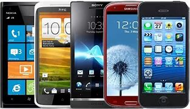

스마트폰
스마트폰은 컴퓨터를 결합한 무선 휴대전화기이다. PC에서 실행되는 운영체제보다 작게 만든 모바일
운영체제를 탑재하여 인터넷 검색, 전자우편, 간단한 문서 편집, 카메라, 오디오 및 비디오 재생 등 PC의
기능을 거의 모두 갖추고 있다.
역사
스마트폰의 역사는 1990년대 초반에 시작되어 현재에 이르기까지 빠르게 발전해 왔습니다.
초기 스마트폰은 단순히 이동 통신 기능을 넘어서서 개인 디지털 어시스턴트(PDA) 기능을 통합한 장치로 시작되었습니다.
안드로이드
안드로이드(영어: Android)는 스마트폰, 태블릿 PC 같은 터치스크린 모바일 장치 용으로 디자인된
운영 체제이자 수정된 리눅스 커널 버전을 비롯한 오픈 소스 소프트웨어에 기반을 둔 모바일 운영 체제다.
아이폰 은 2007년 1월 9일, 애플이 발표한 휴대 전화 시리즈이다. 미국 샌프란시스코에서 열린 맥월드 2007에서 애플의 창업자 중 한명인 스티브 잡스가 발표했다.
샘플
스마트폰 샘플
